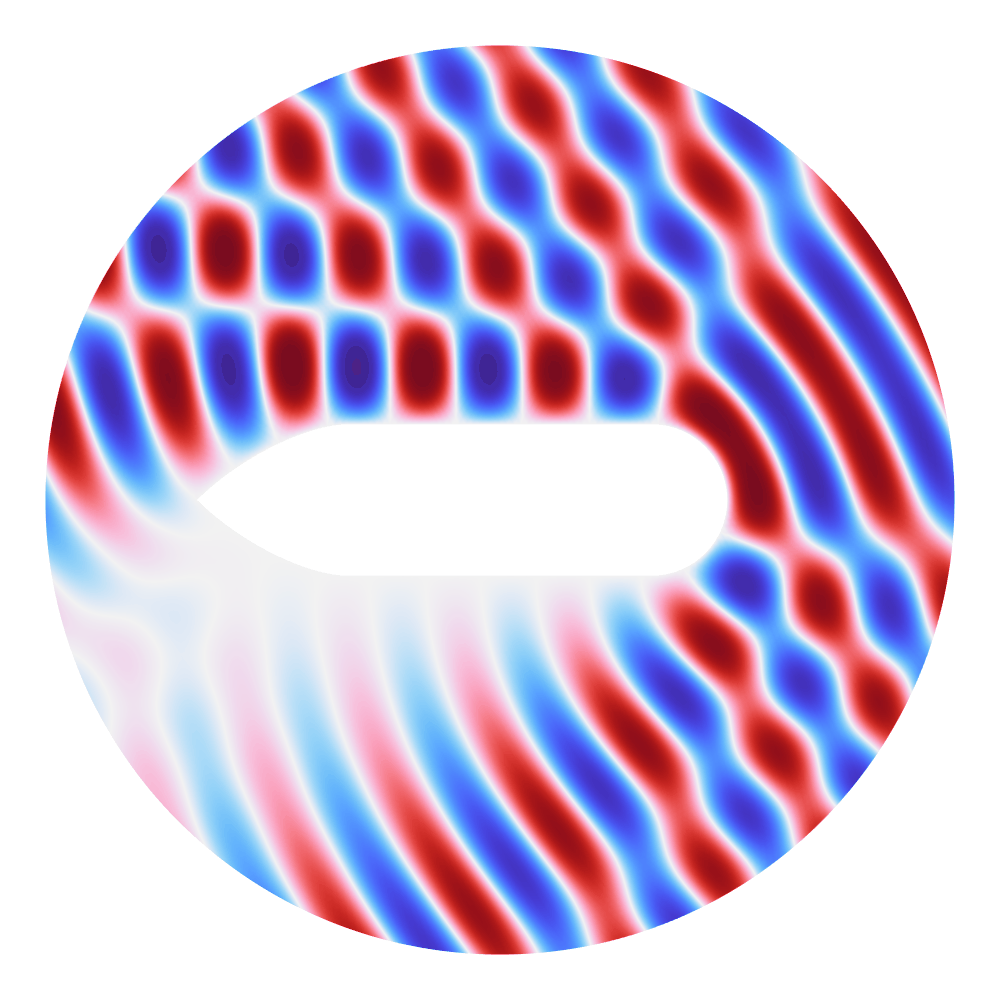
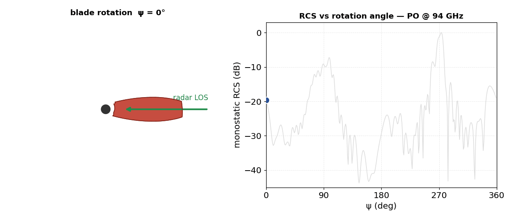

Radar · Sensing · Signal processing
Millimeter-wave & micro-Doppler radar systems
At millimeter waves, radar sees fine motion. I develop 94 GHz (W-band) radar systems and the micro-Doppler signal processing that turns tiny frequency shifts into target identity — combining classical estimation with machine learning.
Applications
The same core sensor and processing chain addresses a range of remote-sensing problems I have published on:
- Target classification & drone detection — micro-Doppler signatures and shape-aware, machine-learning classifiers separate drones, vehicles and low-RCS targets.
- Remote metrology — dual-point Doppler ranging for remote vehicle-height measurement (bridge-collision prevention).
- Condition monitoring — multi-fault detection on wind turbines and rotating machinery from their micro-Doppler spectra.
- Human sensing — remote vital-signs and speech detection.
Method
Work spans the full chain: waveform and antenna choices, time–frequency (spectrogram) analysis, matched filtering and high-resolution estimation, and deep-learning classifiers — implemented and validated in MATLAB, with experimental data from real W-band hardware. Antenna front-ends are designed with the same full-wave tools used for the antenna work.
Radar cross-section (RCS) modelling
How strongly a target reflects — its radar cross-section (RCS) — sets what a radar can detect and identify. I compute RCS from full-wave electromagnetic scattering and, for electrically large targets, physical-optics (PO) methods, in COMSOL and MATLAB.

